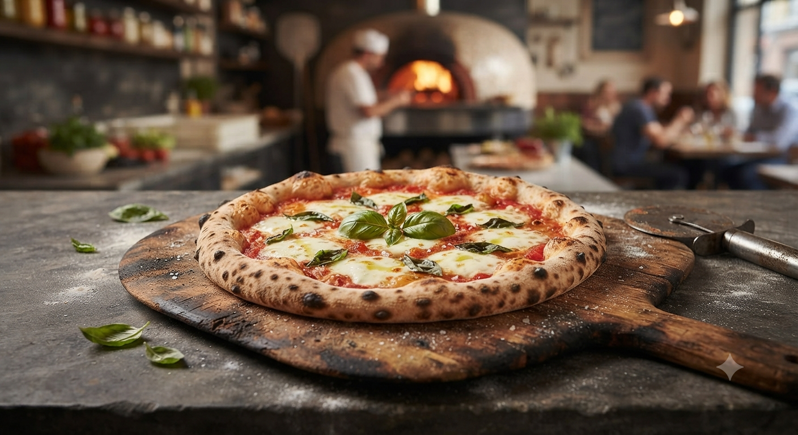
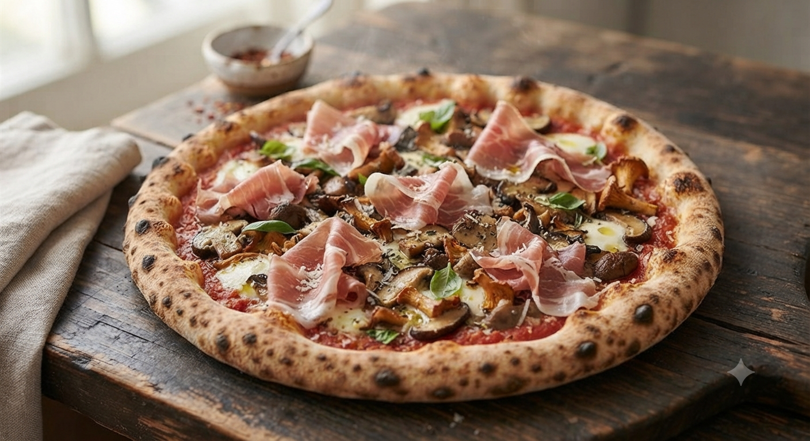

岩手県花巻市、台温泉の麓。
取材お断りの隠れ家で味わう「真実の味」。
The masterpiece of firewood oven

「生地が、とにかく美味い。」
薪窯で一気に焼き上げるからこそ実現する、外側の「カリッ」と、内側の「もちっ」。
ツナ（トンノ）と玉ねぎ、そして熟成されたチーズが溶け合う至福の瞬間。
美食家たちが「花巻まで来る価値がある」と断言する、チンクエの代名詞です。
店主の言葉は、すべてのメニューに対する究極の自信。
薪の爆ぜる音と香ばしい匂いの中、ただ食事を愉しむ贅沢。
★★★★★
「本格的な薪窯のピッツァは初めて。焼肉を食べる予定がなければもう一枚食べたかったほど。」
★★★★★
「ピザ窯がテーブルからも見える。薪窯の香ばしさとさっくり歯ごたえの良さ。花巻の方が羨ましい。」
★★★★☆
「こじんまりとしたバルといった感じ。サラダの瑞々しさ、豆乳パンナコッタまで抜かりなく美味い。」
温泉街を歩く中で、ふらっと扉を開けてくれたら。
そんな隠れ家としての佇まいを大切にしながら、旅の不安や迷いをそっと解消する仕組みを考えています。
「車をどこに止めよう？」という不安を解消するため、近隣駐車場の空き状況やアクセス経路をSNSやマップ上でスマートに確認できる案内。
定休日（日・月）の確認や、その日の混雑具合・焼き上がり目安などをSNSのストーリーズ等でさりげなく、リアルタイムにお知らせ。